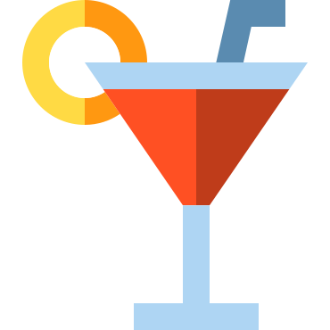

<div class="add-drink">
  <form *ngIf="!isLoading" [formGroup]="createDrinkForm" (ngSubmit)="submit()">
    <h1 class="title">Choose an alcohol</h1>
    <div class="form-control">
      <mat-form-field appearance="outline">
        <mat-icon matPrefix>search</mat-icon>
        <input
          matInput
          aria-label="Alcohol"
          [matAutocomplete]="auto"
          [formControl]="alcoholControl"
          placeholder="Chouffe.."
        />
      </mat-form-field>
      <mat-autocomplete #auto="matAutocomplete" [displayWith]="getAlcoholName">
        <mat-option
          class="alcohol-options"
          *ngFor="let alcohol of filteredAlcohols | async"
          [value]="alcohol"
          ><span> {{ alcohol.name }}</span> |
          <small>{{ alcohol.percentage }}%</small></mat-option
        >
      </mat-autocomplete>
    </div>
    <div class="drink-slider">
      <ngx-slider
        [(value)]="drinkSlider.value"
        [options]="drinkSlider.options"
        [formControl]="quantityControl"
      ></ngx-slider>
    </div>
    <div class="form-control">
      <mat-form-field appearance="outline">
        <mat-placeholder>Date</mat-placeholder>
        <input
          matInput
          [mtxDatetimepicker]="datetimePicker"
          [formControl]="dateTimeControl"
          required
        />
        <mtx-datetimepicker-toggle
          [for]="datetimePicker"
          matSuffix
        ></mtx-datetimepicker-toggle>
        <mtx-datetimepicker
          #datetimePicker
          [type]="type"
          [mode]="mode"
          [startView]="startView"
          [twelvehour]="twelvehour"
          [timeInterval]="timeInterval"
          [touchUi]="touchUi"
        ></mtx-datetimepicker>
      </mat-form-field>
    </div>
  </form>

  <button mat-button routerLink="/">
    <mat-icon>keyboard_return</mat-icon>Dashboard
  </button>
  <button mat-button [disabled]="!createDrinkForm.valid" (click)="submit()">
    <mat-icon>add</mat-icon>Submit
  </button>
</div>
